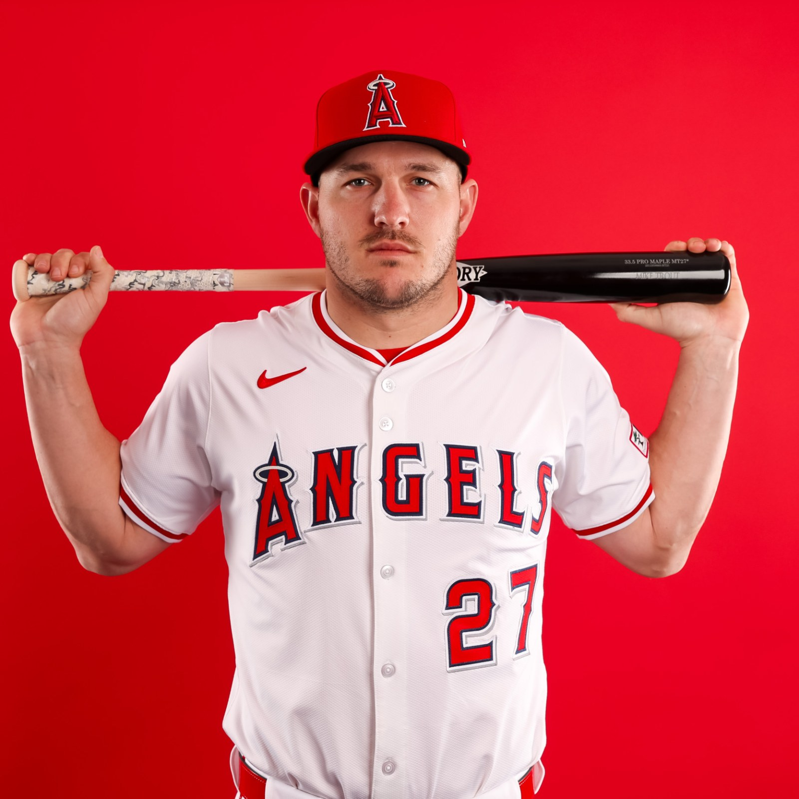

Player Comparison: Mike Trout vs. Ken Griffey Jr.
How do two of baseball's all-time outfielders stack up statistically? Here's a side-by-side look at Mike Trout and Ken Griffey Jr., using both traditional and advanced metrics.
Career Statistics
|  | ||
|---|---|---|
| Career Stat | Mike Trout | Ken Griffey Jr. |
| Games Played | 1,546 | 2,671 |
| Battling Average (AVG) | .297 | .284 |
| Home Runs (HR) | 387 | 630 |
| Runs Batted In (RBI) | 972 | 1,836 |
| Stolen Bases | 214 | 184 |
| On-Base Plus Slugging (OPS) | .986 | .907 |
| wOBA | .413 | .384 |
| WAR (fWAR) | 85.7 | 83.8 |